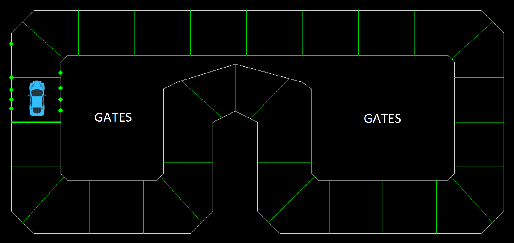

Made with Python
| Collisions | Sensors | AI | Demo |
Collision detection was used in this project to calculate each time the car impacted with a boundary. This data was then used as a negative reward for the reinforcement learning stage. Also, the car displays each time it impacts a wall allowing me to see the exact situation where it happened, and tweak the reactions of the car based on the sensor data that was calculated before the time of impact. The system works by breaking down the frame of the car into a virtual rectangle, and alerting me whenever one of the lines of the frame intersects with a boundary. Below, I have an example of the system.
Sensor detection was the most important piece of creating this self driving car. This is what the car uses to see the track, and to differentiate between the gates and the boundaries. Each sensor is represented a line with a starting point in the center of the car, and an endpoint at the end of the sensor. The car keeps track of its sensor data at all times, and this data consists of what each sensor is seeing at all times, and at what distances. This allows the car to predict when a collision is imminent, as well as predict when a right or left turn is coming up. Using the front sensors, the car knows to accelerate when it has space in front of it, and to slow down when it notices a turn is coming up. Using the angle of intersection between the sensors and the boundaries, the car knows how much to turn at each point - allowing it to keep within the track and navigate even through the sharpest of turns.
I wanted to expand on simply using the sensors and collision detection for the car to get it around the track in one piece. The next step was to implement some artificial intelligence, enabling the car to not only complete a lap, but learn the fastest route around the track. Through reinforcement learning, this is possible. The logic is simple - we need to give the AI a positive award when it does something positive, and a negative award when it does something negative. Through reinforcing this association, the AI will learn it's goal - to achieve the maximum amount of points, and how to do it - speed around the track as fast as possible! To accomplish this, I introduced a gate reward system. The gates are indicated by the green lines through the middle of the track, as shown below. 
Through randomized exploration, the AI will begin to learn which moves trigger a collision. Each attempted lap will be scored based on how many gates the AI passed, and how many collisions it had. The program will always choose the path with the maximum amount of points, and find the point in that path where the collision occured - and it will restart from before the AI landed on the path to a collision. Through this method, the AI will build a path through the entire track! Once it has completed a full lap, it will try to improve the previous path to achieve a higher score, maximizing points by increasing speed and improving decision making. This part of the project is currently in development!
Here you can see a full demo of the car moving around the track! In the future, my goal is to apply this to a real-life scenario, with an RC car built using a Raspberry Pi Model 3B mounted with multiple sensors.